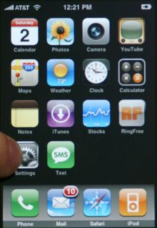
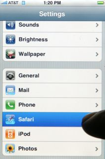
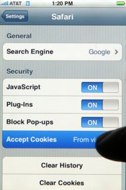
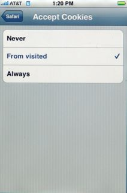

How to enable cookies on the iPhone
For Scrive to work, you must allow cookies to be placed on your telephone so that the server can track current session information.
To enable cookies in Mobile Safari:
- Go to the Home screen by pressing the Home button or by unlocking your phone.
- Select the Settings icon.

- Select Safari from the Settings menu.

- Select Accept Cookies from the Safari menu.

- Select From visited from the Accept Cookies menu.

- Press the Home button to return the the iPhone home screen.
- Select the Safari icon to return to Safari.
- Before the cookie settings change will take effect, Safari must restart. To restart Safari press and hold the Home button (for around five seconds) until the iPhone display goes blank and the home screen appears.
- Select the Safari icon to return to Safari.
If cookies are successfully enabled, clicking signing link in the email again should lead to signing process.